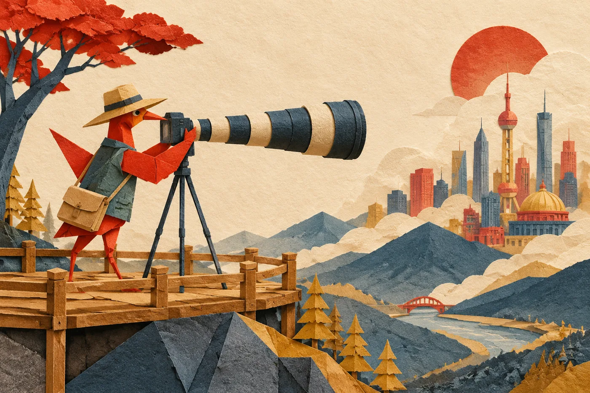
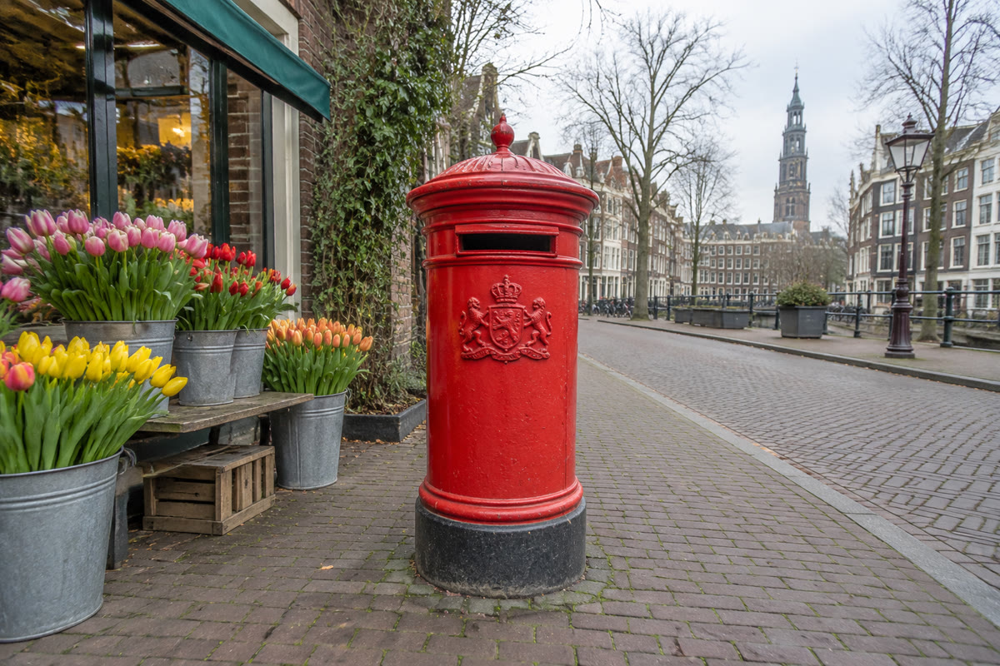
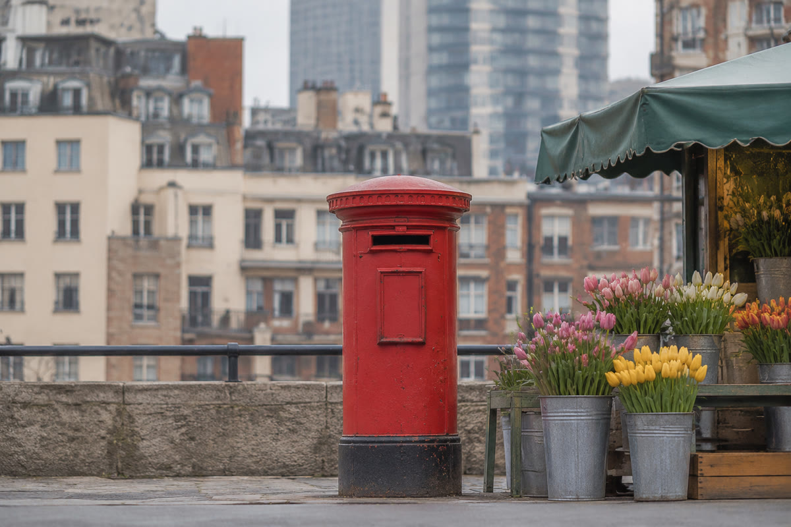

INTERACTIVE镜头册 · 光学手册第二部
上一册拆了机身：光圈、快门、ISO。这一册拆镜头——为什么 24mm 把世界拍得辽阔、85mm 把背景压到眼前；为什么同一台相机换个镜头，景深和透视全变。五段互动，每一段都能亲手拖。

焦距不是「拍多远」，是视野多宽。18mm 能吞下一整面墙，200mm 只装得下一扇窗。拖动滑杆，看视角扇形怎么开合。
全画幅对角线 43.3mm。视角 = 2·arctan(43.3 ÷ 2f)——焦距越长，扇形越窄。这也是「广角/长焦」的物理来源：不是放大倍率，是纳入世界的角度。镜头厂用对角线定义「视角」，用横向定义「水平视角」，你看到厂商标的常常是后者（更宽更好看）。
「广角空间感强、长焦压扁背景」的真相：透视只由相机到主体的距离决定。焦距只是强迫你退后或凑近——改变的是你的站位。
下面两张实拍都是那只红色邮筒，主体在画面里几乎一样大——但左边的背景楼被推得老远（24mm 凑近拍），右边的背景被压到邮筒背后（85mm 退远拍）。主体大小一样、背景大小天差地别：这就是「透视压缩」的全部秘密。


对焦在 3 米，3.2 米的东西糊吗？5 米呢？景深公式一次讲清：焦距越长、光圈越大、离得越近，清晰的地段越窄。
这是摄影里最值得背下来的一个公式——因为它直接决定「拍人像用什么头、拍风景缩到多少」：
注意分母是 f²——焦距对景深的影响是平方级的：50mm→100mm，景深直接砍到 1/4。这就是为什么人像头都是 85/135mm 而不是 35mm：不是画质，是要那片「窄窄的清晰带」。
「50mm 在 APS-C 上等于 75mm」——这句话省略了太多。真正的换算有三层：视角、景深、暗光，每层的换算系数不一样。
传感器小了，同样 50mm 镜头「看到的扇形」就窄了——等效的是「全画幅上要装多长焦距才能看到一样的扇形」。但这只是第一层。景深的等效系数是焦距系数本身（光圈也要乘），暗光能力则是面积比。三层一起算才算真懂：
一支 24-70mm f/2.8 里有十几片玻璃：聚焦组来回滑动，防抖组反向补偿，光圈叶片开合——拆开看，每个组件都在打工。
镜头不是「一块凸透镜」，是一组透镜分工合作：前组负责收光、中组负责变焦、后组负责聚焦，镀膜负责压制反射（每一片玻璃与空气的界面都会反光，十几片就是几十次反射——镀膜把单面反射率从 4% 压到 0.1%）。
如果只带走六句——
想压缩背景：退后 + 长焦。想拉开纵深：凑近 + 广角。别怪镜头，怪脚。
50→100mm 景深 ÷4。人像虚化靠长焦 + 大光圈 + 站得近，三管齐下。
对焦 H，H/2 到 ∞ 全清晰。广角 f/8 的 H 常在 2–3m——街拍陷阱对焦神器。
视角 × 焦距系数、景深 × 焦距系数、暗光 × 面积系数。只说第一层等于没说。
口径翻倍=玻璃翻四倍重；像差难收=全开偏软。f/1.2 的价格在为直径付钱。
前组收光、中组变焦、防抖组反向补偿、聚焦组前后滑、镀膜压反射——十几个工人各管一段。
机身决定「怎么记录」，镜头决定「看到什么」。——光学手册 · 镜头册 · 完